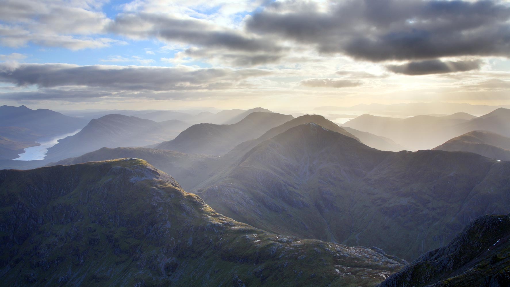
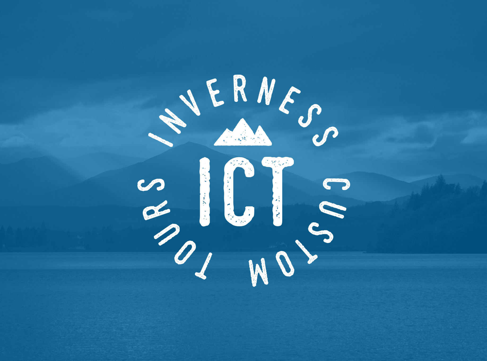

A mobile-first concept for visitors who do not need another long tour list — they need a clear way to explain their interests and continue the conversation with a local private-tour team.
Shape your tour ideaInverness Custom Tours presents private Highland tours and custom itineraries. Choose the theme that matters most, then use the operator's current site or email to confirm a suitable route, dates, timings, collection arrangements and terms.


This concept does not state prices, durations, meeting points, pick-up arrangements, availability or a guaranteed route.